항공모함 관련 이모저모 (2)
게시: 2021-06-10T06:30:42+09:00
<제 도끼에 제 발등을 찍은 항공모함> 1941년 3월 영국 수송로를 위협하러 대서양으로 출격한 독일 전함 Scharnhorst와 Gneisenau를 찾아나선 HMS Ark Royal. 전날 Fulmar 함재기가 그 대략적인 위치를 파악한 뒤라서 이번에는 제대로 찾아낼 거라고 벼르고 있었느나 사출기 고장으로 인해 이함 준비가 안된 Fairey Swordfish 함재기가 그냥 전방으로 내던져짐. 전속력으로 달리던 아크로열은 그대로 바다 위에 떨어진 소드피쉬를 들이받고 올라탐. 그런데 하필 그 소드피쉬가 장착하고 있던 것은 대잠용 폭뢰. 소드피쉬가 꼬로록 하면서 아크로열 밑에서 폭뢰가 폭발하며 함체를 손상시킴. 아크로열은 수리를 위해 지브랄타로 돌아가고 샤른호스트와 그나이제나우도 무사히 브레스트 항구로 돌아감.
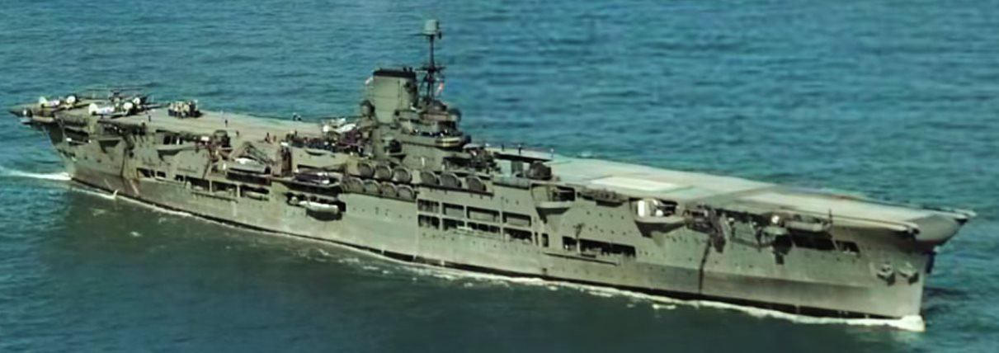 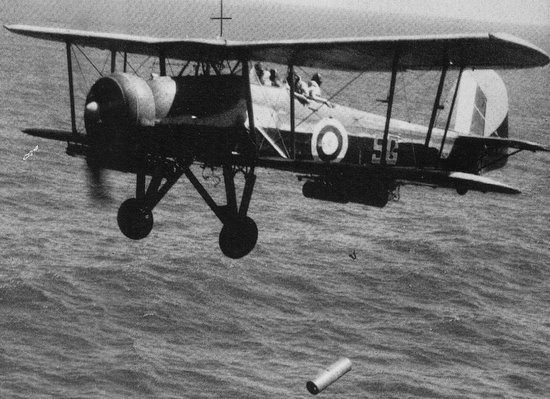
<사상 최대의 함재기> 여태까지 함재기 중 가장 무거운 함재기는 폭격기로 개발되었다가 공중급유기로 활용된 A-3 Skywarrior. 최대 이륙 중량 37톤. 폭장량 5.8톤. 별명은 Whale (고래). 참고로 큰 기체에 속하는 F-4 Phantom의 최대 이륙 중량이 대략 16톤, 쌍발엔진의 조기경보기인 E-2 Hawkeye가 26톤. 원래 원폭 투하용으로 만들어진 것이라 레이더로 조준한 지상 목표물에 수평 비행을 하며 폭탄을 투하하게 설계 되어 있었는데, 정작 투입된 비엣남 정글에서의 목표물은 레이더로 조준할 만한 것이 아니었음. 그래서 조종사들은 Dive bombing을 시도했으나 (2번째 사진), 문제는 A-3에는 광학 조준경이 없었다는 점. 쉽게 포기하지 않았던 A-3 조종사들은 앞유리창에 색연필로 조준경을 그려놓고 그걸로 폭탄 조준을 했다고. 그러나 결국 이건 아니다 싶어 정찰기와 전자전기 역할을 전전하다 결국 함재 공중급유기로 정착. ** A-3가 퇴역한 이후 정규 항모에서의 공중급유기 역할은 F-18끼리 서로 해주고 있다고.
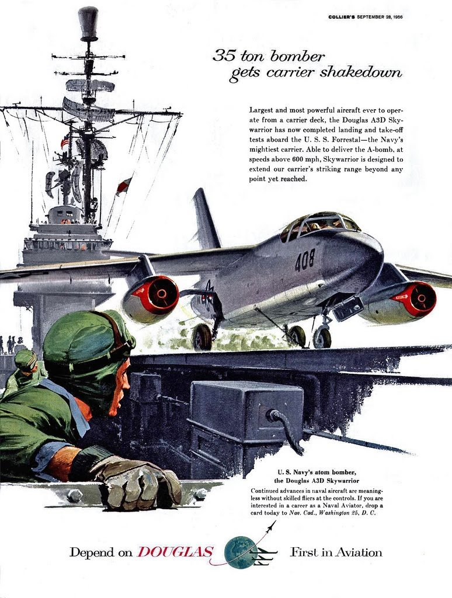 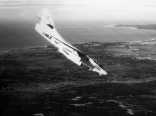 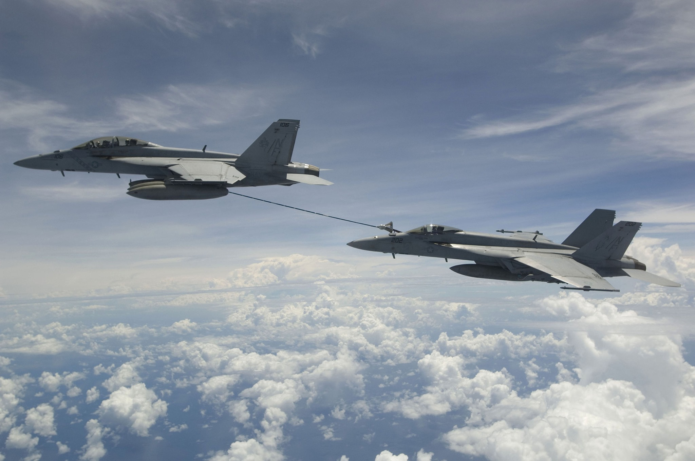
<Angled flight deck이 발명된 뜻밖의 이유>
아래 동영상 GIF 사진은 1948년 HMS Warrior 함상에서 가설된 '고무 비행갑판' 위에 착륙하는 De Havilland Sea Vampire. 공기를 불어넣은 고무 호스 수백개를 가로로 깔고 그 위에 고무판을 덮어 푹신푹신한 착륙용 갑판을 만듬. 고무판에는 바닷물을 계속 뿌려 미끄럽게 유지함. 착륙한 후에는 기중기로 함재기를 들어올리고 이동용 수레에 올림. 그 이후는 랜딩 기어 달린 비행기처럼 움직임. 이런 미친 짓을 시도한 이유는 랜딩기어를 없애서 더 가벼운 함재기를 만들려는 것. 그럴 경우 거의 15% 더 가벼워진다고.
이 방식에는 본질적인 문제가 있었음. 바로 함재기 회수 속도. 함재기 회수는 항모가 매우 취약해지는 순간이고, 그래서 항모는 1분에 약 4대 정도의 빠른 속도로 함재기 착함을 받아들여야 했는데, 이 방식으로는 5분에 1대 회수가 고작. 그러나 끈질긴 영길리 엔지니어들은 이 고무 비행갑판을 포기하지 않고 재빠른 함재기 회수를 위해 3번 사진의 'angled flight deck', 즉 좌현쪽으로 비스듬히 난 별도의 착함용 비행갑판을 따로 만드는 아이디어를 냄. 여기에 랜딩기어 없는 함재기가 착함하면 재빨리 옆의 main deck에 밀어내어 그 다음 함재기를 받아내자는 것. 결과적으로 이 고무 비행갑판 시도는 1954년 최종 폐기되었으나 이 말도 안되는 시도의 결함 극복을 위해 만든 angled deck은 지금 전세계 해군이 사용하는 표준이 되었음.
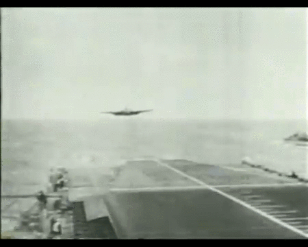 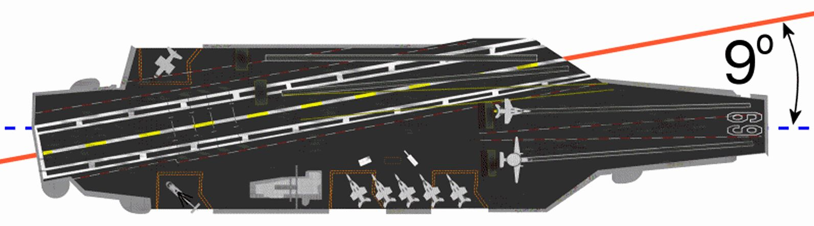
<철망 옆 홈통의 정체> 항모 비행갑판 가장자리는 저렇게 그물망이 쳐진 난간이 설치되어 있는데 이를 scupper라고 부름. 물론 사람의 추락 방지를 위한 것. 그런데 군데군데 그물 대신 넓직한 홈통(chute)이 놓여진 부분이 있음. 이건 유사시 폭탄이나 연료탱크를 급히 바다에 던져버리기 위한 것.
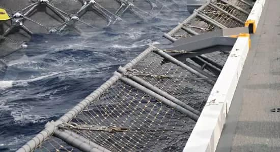 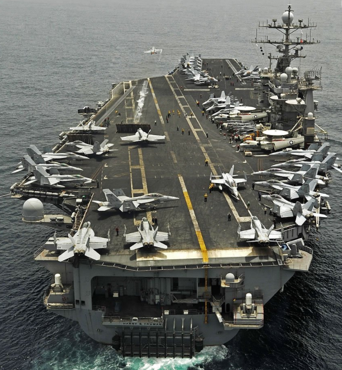
<모든 것이 완벽히 준비된 군함이란 없다>
1941년 5월 24일, 독일전함 Bismarck를 잡기 위해 HMS Victorious에서 뇌격기들이 날아오를 때 상황 - 뇌격기는 시대에 뒤떨어진 복엽기 Swordfish - 뇌격기 편대는 한번도 편대 공격 훈련을 받아본 적이 없음 - 조종사 중 일부는 5일 전에야 생애 최초로 항모에 착륙해봤음 - 날씨가 개판이라 하늘의 80%가 먹구름에 뒤덮힘 - 이륙 당시 비행갑판이 위아래 5m씩 출렁일 정도로 파도가 심함 - 결정적으로, 비스마르크가 어디 있는지 모름
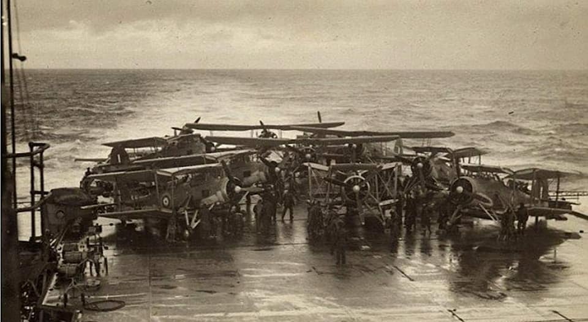 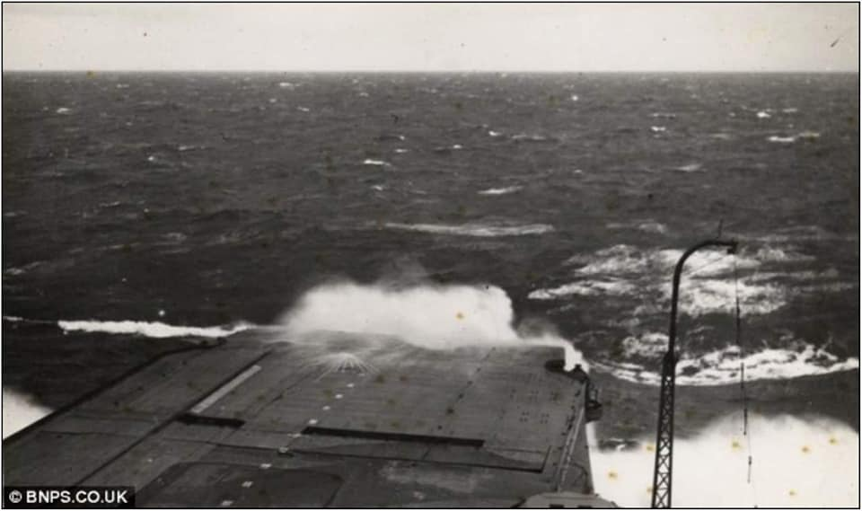 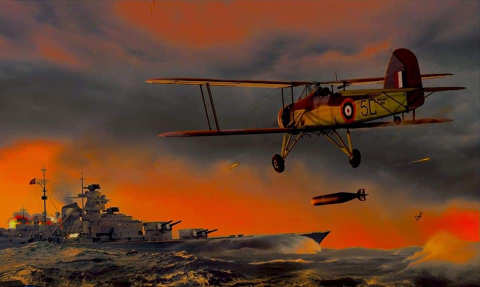
<왜 경항모는 30노트 이상이어야 하는가>
배가 빨라봐야 항공기에 비하면 느린데 30노트나 20노트나 그게 그거라고 생각하시는 분들이 많을텐데 차이가 큼.
1) 잠수함의 위협 가장 위협적인 항모 킬러는 잠수함. 잠수함에게 덜컥 걸리지 않으려면 잠수함보다 빠른 속도로 부지런히 지그재그 항해를 하는 수 밖에 없음. 특히 요즘 원잠은 28노트 가까이 내는 것들도 많아서 최소 30노트 이상은 내야함.
2) 맞바람 캐터펄트도 없는 경항모에서 이륙하려면 아무리 STOVL 함재기라도 강한 맞바람이 있어야 함. F-35는 150m만 있어도 이륙 가능하다지만 맞바람이 강할 수록 더 많은 연료와 무장을 싣고 이륙 가능하므로 1노트라도 더 빨라야 함.
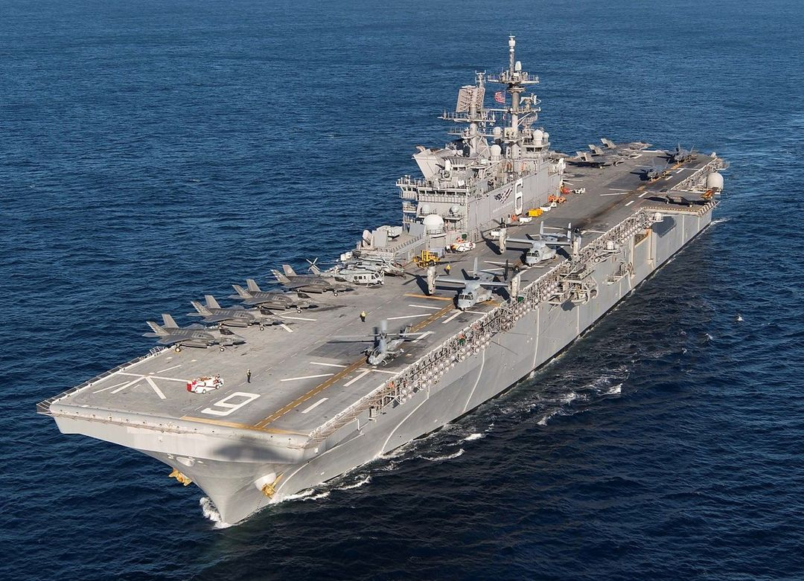
(이건 USS America (LHA-6). 이 함정은 상륙강습함(Amphibious Assult Ship)으로 분류되는데, 경항모와는 많은 점이 다르지만 일단 속도가 22노트 정도로 느림.)
<초라한 시작, 창대한 결과>
미해군 최초의 항모 USS Langley (CV-1). 석탄선을 개조해서 만듬. 1924년 캘리포니아 North Island에 정박한 모습.
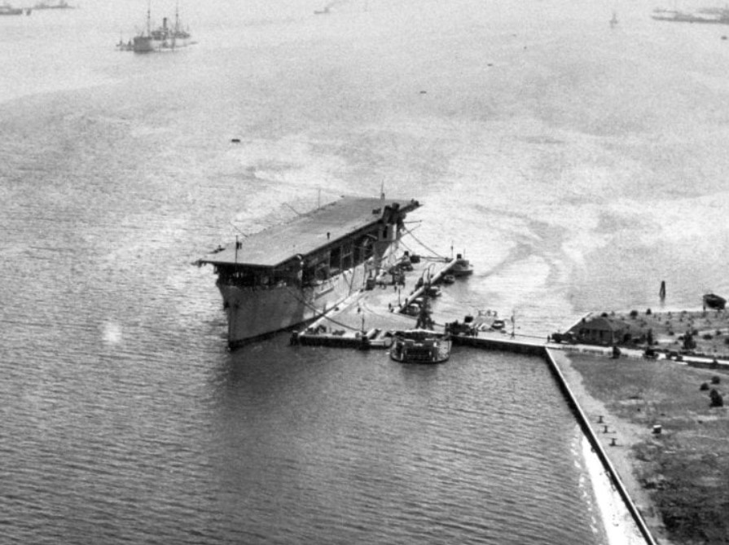
<세상은 미친 놈들이 만들어가는 것>
최초의 공중급유는 1923년 미육군 항공대에서. 처음에는 손으로 기름통을 깔대기에 연결된 호스에 부어넣어서 실시. 저게 뭔 소용이냐는 비아냥을 잠재우기 위해 저런 식으로 무려 37시간 연속 비행. 그 동안 쉬는 그렇다치고 응아는 어떻게 처리했는지...
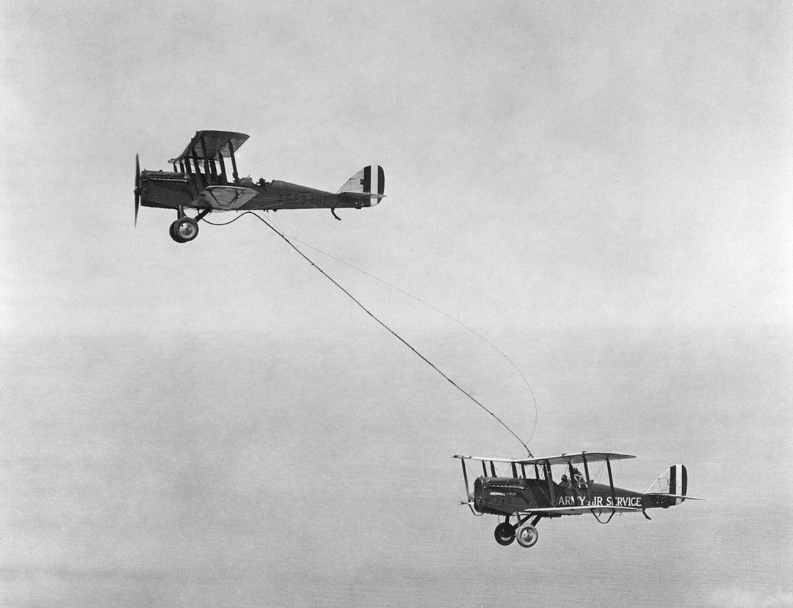
<물은 어떻게?>
역사상 최대의 해군 기지는 남태평양 Ulithi (현지어로는 대충 울씨 정도로 읽는다고) 환초 기지. 1945년 3월 여기는 항모 29척, 전함 15척, 순양함 23척, 그리고 106척의 구축함으로 이루어진 함대의 모항이었음. 여기를 기지로 삼은 것은 공략할 동남아 일본군 기지와의 상대적 위치, 그리고 거친 파도로부터 함대를 보호해줄 환초의 특성 때문. 여기서 일한 각종 기술자만도 6천명 수준. 당시 여기서는 모든 부품과 모든 합금을 제조해냈음. 그러나 당시 이곳 원주민 수는 400여명. 지금도 1천명을 넘지 않는 곳. 당연히 물이 부족. 이걸 해결한 것은 USS Abatan(2만톤, 두번째 사진) 등의 증류선. 바닷물을 증류하여 식수로 만듬. 뿐만 아니라 아이스크림 제조선도 따로 존재. 한번 임무 수행에 1,900리터의 아이스크림을 제조.
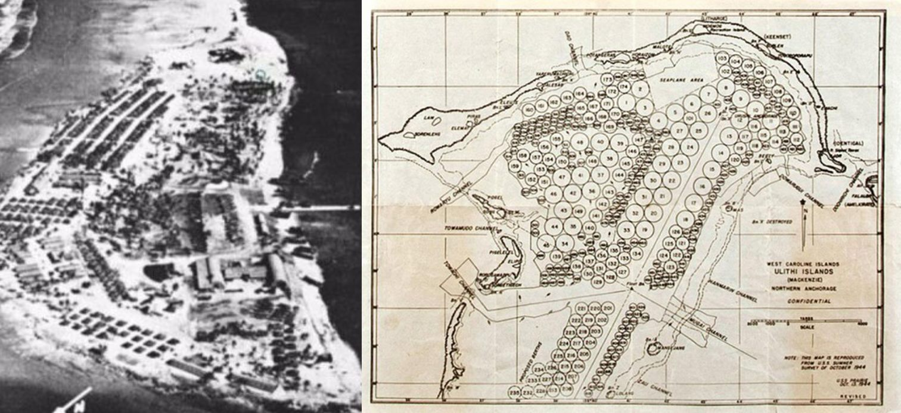 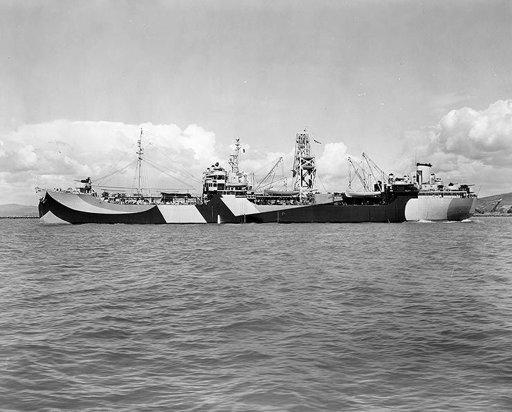
<각자의 사정>
1) 1945년 3월, 일본 폭격기에게 당해 우현으로 기울고 있는 USS Franklin (CV-13) 2) 1944년 12월, 태평양에서 미해군을 때려눕힌 태풍 코브라 속에서 우현으로 기운 USS Langley (CVL-27) 3) 1960년, 저런 상황에 대비한 훈련 중인 HMAS Melbourne ** 셋 다 침몰 면했음
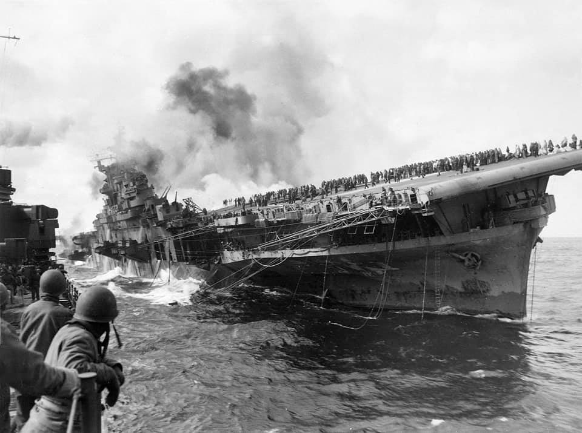 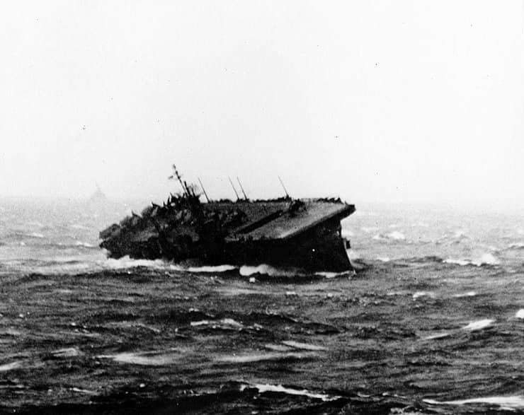 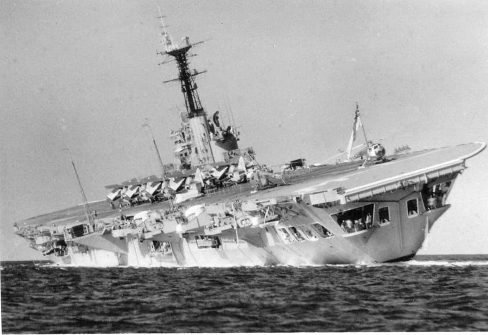
<"아직 두 발 남았다">
베트남 전쟁 약 9년간 공중급유기는 무려 20만 회 출격하여 14억 갤론의 연료를 급유. 이는 올림픽 수영 경기장 2,120개를 채울 분량. 1972년 최고조에 달했을 때 미공군 전체의 공중급유기 중 30%인 195대가 베트남 인근에 배치되었는데, 그 중 가장 큰 기지는 태국 U-Tapao 공군기지. 46대의 공중급유기가 배치되어 매일 60회씩 기름 배달 나갔다고.. 정비 중인 급유기가 있다는 점을 감안하면 비행 가능한 급유기는 매일 2회씩 출격했다는 이야기. 공중급유는 일정하게 정해진 'anchor' 구역에서 랑데부하여 이루어짐. 앵커 구역은 태국, 라오스 남베트남 및 통킹만 해상 등에 있었는데, 보통 이런 앵커 구역에서는 수십대의 항공기가 선회하면서 자기 차례를 기다렸다고. 베트남 전에서 가장 유명한 조종사였던 Robin Olds 대령의 일화가 유명한데, 정말 기름이 간당간당한 상태에서 앵커 구역에 도착했는데 나름대로의 이유로 공중급유기가 급유를 거부. 열받은 올즈 대령은 무선으로 정말 이렇게 말했다고.
"나 사이드와인더 2발 남았다. 내가 비상사출하기 전에 방아쇠 당길거야. 니들 낙하산 매라."
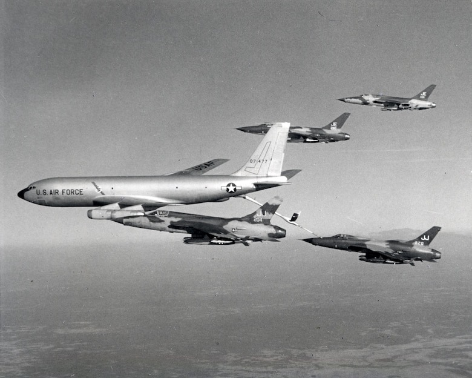 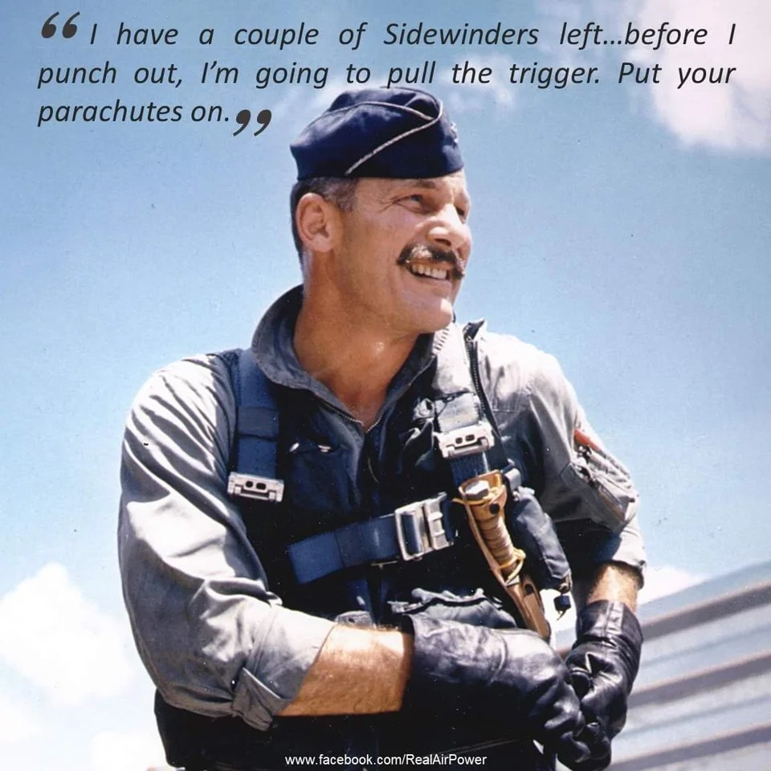
<한국전쟁 때 부칸의 공습을 받은 미군기지>
부칸도 일방적으로 공습만 당한 것이 아니라 미군 기지를 공습하기도 했음. 황해도 남포 앞바다에 '초도'라는 섬이 있는데 여기에 미군이 1km 채 안되는 활주로를 닦고 레이더도 갖다 놓고 주로 격추된 미군 조종사 구출 및 미그기 출현 감시를 위한 전진 기지로 활용. 1952년 10월, 6대의 Po-2 복엽기가 여기를 공습하여 14발의 폭탄을 투하. 민간인 4명 사망. 정전협정의 조약에 따라 휴전과 함께 미군은 여기서 철수. 지금도 구글 맵에 그때의 활주로가 북쪽 해안에 보임.
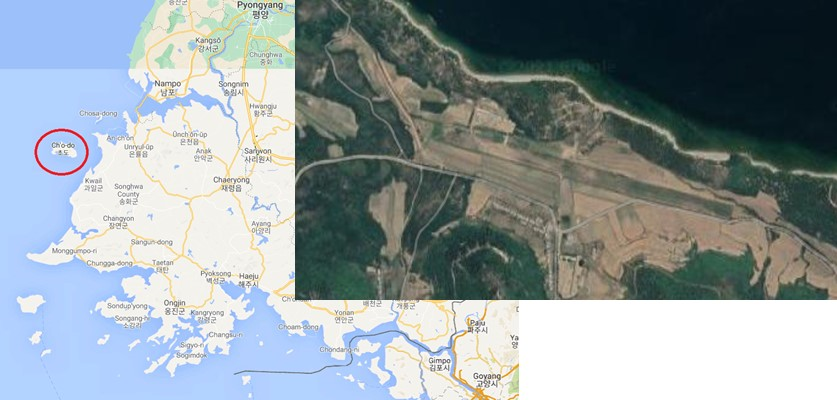